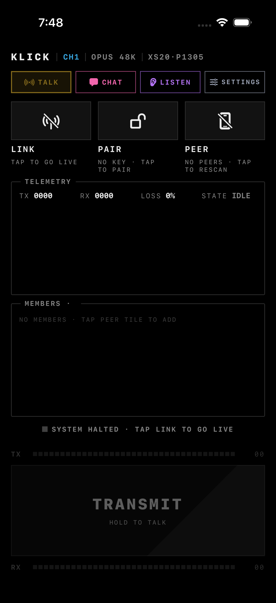
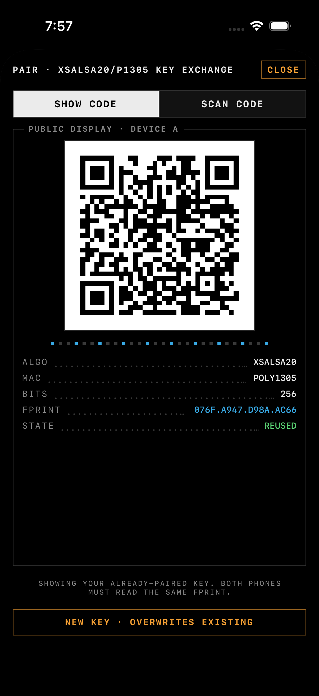
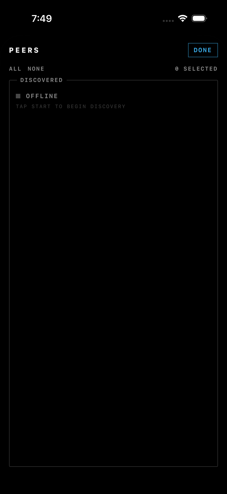
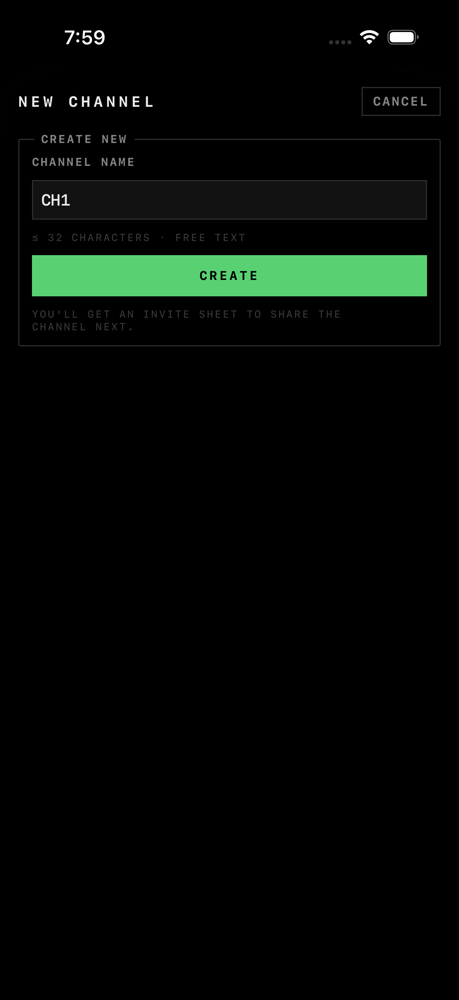
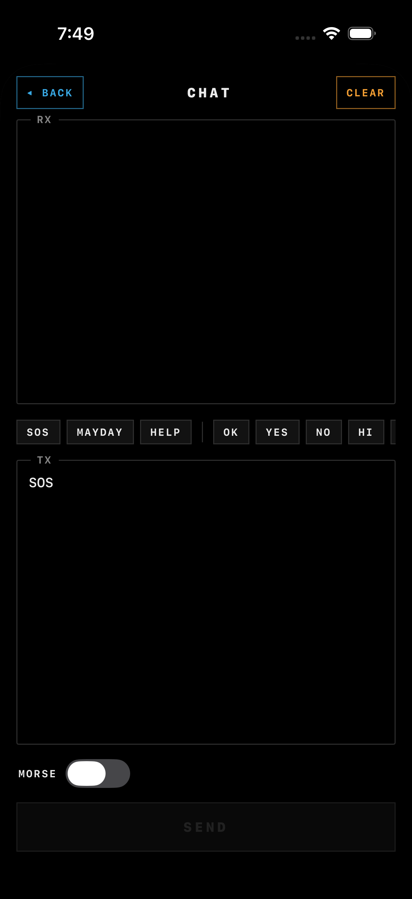
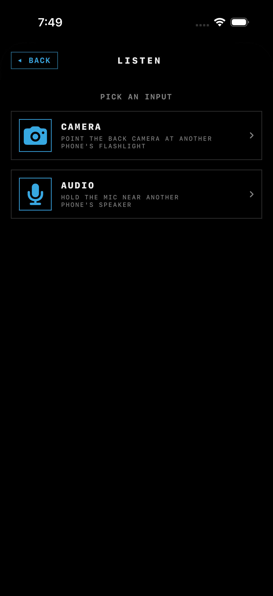
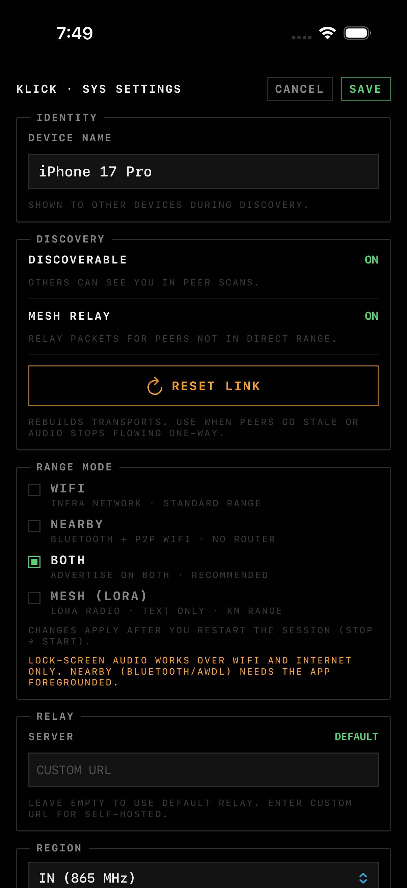

TAP TO CLOSE
Klick turns two or more iPhones into an encrypted walkie-talkie. It finds peers over WiFi and Bluetooth, encrypts every packet end-to-end, and never touches a server — talk, text, or send Morse, even with no internet at all.

Most comms apps route your voice through someone's cloud. Klick doesn't have one — every feature is designed to work between two phones and nothing else.
There's nothing to sign up for and nothing to sign in to. Devices talk directly to each other.
Every packet — voice, text, or Morse — is sealed with libsodium (XSalsa20 + Poly1305) before it leaves the device.
WiFi and Bluetooth discovery need a shared network or just proximity — no cell signal, no internet required.
Pair a Meshtastic LoRa radio to carry encrypted text far past WiFi/Bluetooth range, with region-aware duty-cycle limits built in.
Everything below runs on the same encrypted transport layer — pick the mode that fits the situation.
Hold the TRANSMIT button to send live Opus-encoded voice to selected peers over WiFi (UDP + Bonjour) or Bluetooth (MultipeerConnectivity) — whichever's in range.
Create channels for a crew or an event. Each one gets its own encryption key, so members never share a key with anyone outside the channel.
Prefer typing? Send text over the same encrypted link, with preset phrases (SOS, HELP, OK…) for one-tap sending.
Send any message as Morse — beeped through the speaker or flashed through the torch — and decode incoming Morse via the camera or the mic.
Pair a Meshtastic radio over Bluetooth to carry text far beyond WiFi/Bluetooth range, with a region picker and an ETSI-style duty-cycle ledger to stay compliant.
Out of direct range? Other Klick phones nearby can flood-relay your packet up to 3 hops, with dedup so it doesn't loop forever.
An incoming transmission while the app is backgrounded surfaces as a system call — it rings, shows on the lock screen, and bypasses Do Not Disturb.
Invite someone by QR code, over-the-wire to a nearby peer, or with a universal link — tapping it opens Klick straight into the channel.
Go invisible on the mesh whenever you want — you can still browse and reach peers you already know, without advertising your presence.
Real screens from the current build, in the order you'd actually tap through them.
The main screen is the whole app: LINK starts your radios (WiFi + Bluetooth), PAIR sets up encryption with another device, and PEER is who you're talking to. TX/RX telemetry and the hold-to-talk button sit below.

Pairing exchanges a 32-byte key over a QR code — one device shows it, the other scans it. The key is stored in the Keychain and never leaves either device unencrypted.
Legacy pairwise keys still work; channels (below) use their own per-channel key instead.

Discovered devices show up here automatically once LINK is on. Multi-select who your next transmission or message goes to — ALL, NONE, or pick individually.

Channels get their own encryption key and a member list, so you can run one persistent group (a crew, a trip, an event) instead of re-selecting peers every time. Invite members by QR, over-the-wire, or a shareable link.

Preset chips (SOS, HELP, OK…) drop straight into the composer. Flip "SEND AS MORSE" and the same message goes out as tone/flashlight pulses instead of a silent text packet.

Point the back camera at another phone's flashlight, or hold the mic near its speaker — either way, decoded characters land straight in your chat history.

Set your region for LoRa duty-cycle rules, toggle whether you're discoverable on the mesh, turn phone-to-phone relay on or off, and unpair a device if you need to start clean.
crypto_secretbox (XSalsa20 + Poly1305) authenticates and encrypts every packet before it's sent.